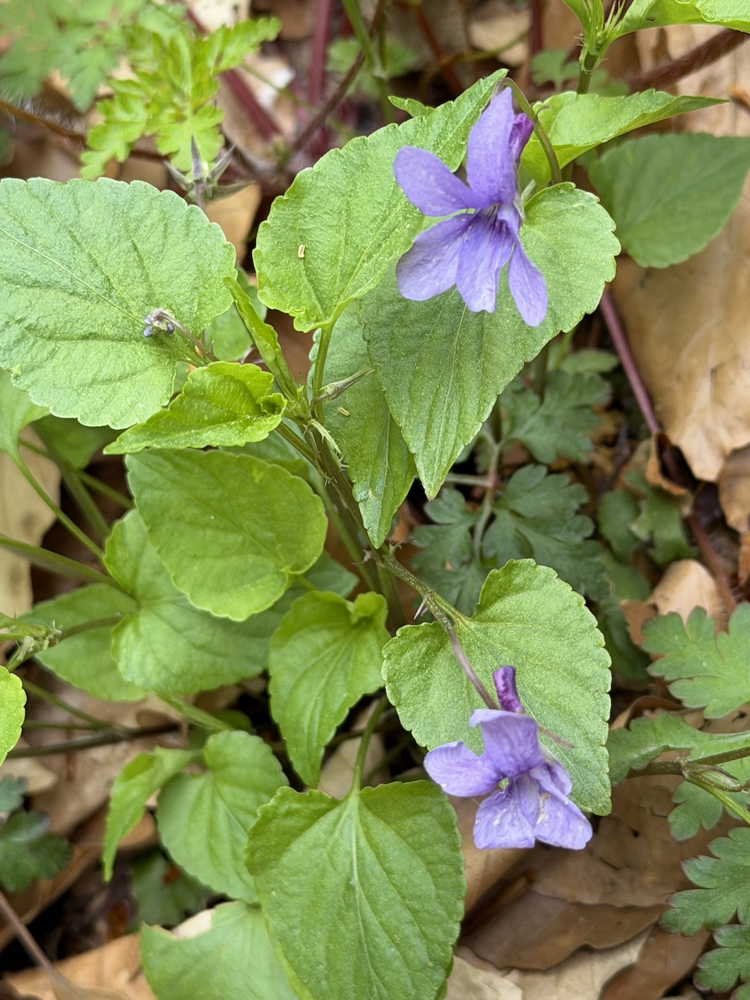
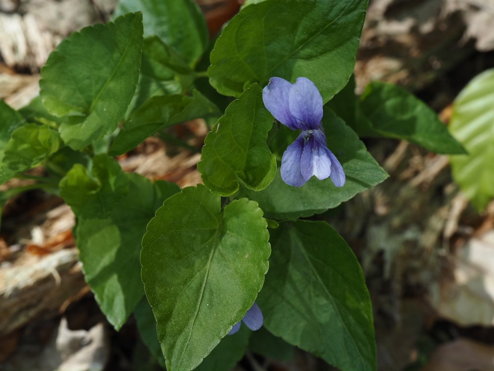

Veilchen ist nicht gleich Veilchen
In Deutschland gibt es etwa 15 heimische Veilchen-Arten — alle ähnlich, aber eindeutig unterscheidbar. Das Wald-Veilchen (Viola reichenbachiana) hat dunklere Blüten als die Schwester Hain-Veilchen (V. riviniana) und der Sporn ist dunkler violett, fast dunkelblau. Botaniker schauen sich genau diese kleinen Details an — Wald-Veilchen-Sporn, Hain-Veilchen-Sporn — ein Spezialgebiet.
Doppelte Bestäubungsstrategie
Im Frühling produziert das Wald-Veilchen wunderschöne, geöffnete Blüten — die werden von Insekten bestäubt. Im Sommer entwickelt es dann zusätzlich kleine, geschlossene Knospen, die sich selbst bestäuben („kleistogame Blüten“). So ist die Pflanze unabhängig vom Insektenbesuch: Plan A im Frühling, Plan B im Sommer. Eine Doppelstrategie, die nur wenige heimische Pflanzen kennen.